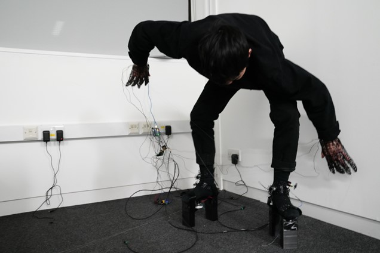
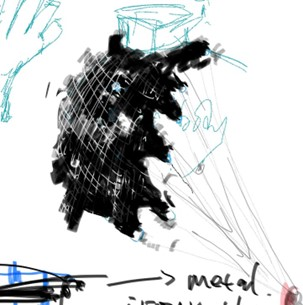
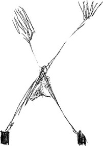

It is the first physical computing project for me, everything is new, but I always try to make thing for wearing on human body. This project is construct by 3D printing with flexible filaments, which allows sensors and components being located on body well. So they can interact with different parts of human body. Besides, in the process, I found we can build new extension for improve basic components functioning, and use codes to enhance the relationships between components and its extension.

I believe wearable can be playful and tender, not like cold machine or outer-skeleton. So It can be a pleasure when your play with them and gradually realise their power, then learn to how to get along with it, then they become one of a part of your body, even powerful. Just like there are some movies explore this ideas, for example, in the Venom, the man share his body with another alien creature, even he can not control this master.


Then I researched many people are engaged in the way to implement human body in a way without following regular ways, for example, artworks by Rebecca Horn “Finger Gloves” – 1972(left).